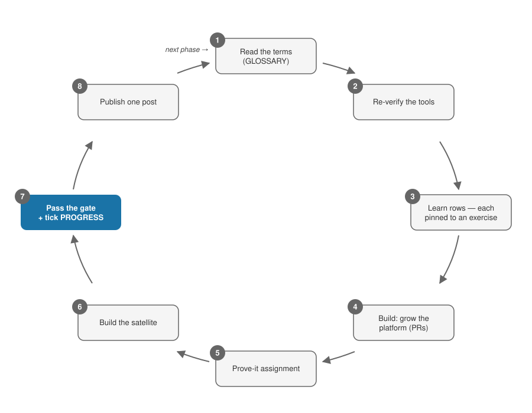

The Guide — exactly what to do, in order¶
This file assumes nothing. Follow it top to bottom. When it says open a file, open that file.
Jump: Day 0 · The phase loop · Using the built-in skills · Getting a unique project brief · Coming back after a break · Every week · Standing rules
Day 0 — set yourself up¶
Time needed: about 30 minutes. Do these in order.
- Make a GitHub account if you don't have one: github.com/signup.
- Fork this repo. On the repo's GitHub page, click Fork (top right), then Create fork. You now have your own copy.
- Clone your fork:
git clone https://github.com/YOUR-USERNAME/DE-projects.git - Read README.md top to bottom. It's short.
- Pick your starting phase. Most people start at Phase 0 — if that's you, skip to step 7. Already an experienced data person? Open reference/LEARNERS.md, section "Placement — entering at the right phase", and follow its numbered steps.
- (If you're not starting fresh at Phase 0 — or you forked a used copy) Reset the tracker. Open PROGRESS.md in your editor. Clear every evidence table, date, and log row. It's yours now.
- Stamp your start. In PROGRESS.md, fill in "Started:" with today's date. Commit and push.
- Read the Standing rules at the bottom of this guide. They apply all year.
- Open phases/phase-0-orientation/README.md and start the phase loop. Phase 0 itself walks you through installing every tool and creating every account — you don't need to prepare anything else today.
Accounts and money, the whole year¶
Don't create these on Day 0 — each phase tells you when. This is the complete list so nothing surprises you:
| What | Cost | Arrives in |
|---|---|---|
GitHub · AWS (with a de-framework IAM profile + $25/mo budget alarm) |
free / ≤ $25/mo | P0 |
| DataLemur + LeetCode · dbt Learn | free | P1 |
| Udemy (Maarek DEA course ~$15–20 on sale) · Tutorials Dojo ($15) · AWS Skill Builder (optional $29 for 1 month) · AWS DEA-C01 exam $150 | see left | P2 |
| Databricks Free Edition · Databricks Academy · Derar Alhussein course (~$30–40) · Databricks exam $200 → $100 with voucher | see left | P3 |
| Astronomer Academy · Dagster University | free | P4 |
| Confluent Developer (free courses + free certificate) | free | P5 |
| Optional books: PySpark (Rioux ~$33) · DDIA 2E · FoDE (~$45, P0) | optional | P0/P3/P6 |
| Optional video-lane courses (catalog + prices) — Udemy twins ~$15–25 each · Coursera $49/mo | optional — a $0 default lane always exists; not in the total below | any phase |
| Communities for external critique: r/dataengineering, dbt Slack, DataTalksClub Slack | free | from G2 |
Total for the year: AWS ≤ $25/month + certifications ~$310–455 (breakdown).
The phase loop¶

Every phase README has the same sections, in the same order. Work them like this. "The phase README" means the file you opened, e.g. phases/phase-2-aws-lakehouse-core/README.md.
- Read the header and Objectives. The top lines tell you the months, the hours, and what it costs. Objectives tells you what you'll be able to do at the end. Read nothing else yet.
- Run the re-verify checks. At the end of the Learn section there's an italic line starting "Before starting, re-verify." Tools change; do those checks now, before you invest hours.
- Learn the words first. Open GLOSSARY.md and find this phase's section (the terms tagged
[P0],[P1], …). Read every term and explain it out loud in your own words. From Phase 1 on, quiz yourself with the Anki deck you built in Phase 0 — or run the/quizskill. - Work the Learn table, top to bottom, one row at a time. Each row names a resource, how much of it to do, and — in the "Pinned by" column — the exercise that locks it in. Finish the row's exercise before starting the next row. Never bank rows to "exercise later." Some phases add a second, video-lane table under the default one — vetted video twins of named rows, catalogued with prices in reference/COURSES.md. For each row it names, pick one lane before you start the row, then do that lane's resource and the row's exercise. The lane you didn't pick is your fallback — open it only when you're stuck. Never work both lanes of one row; hours swap, they never add.
- Do the Build steps in order. This grows your platform repo. Every change: make a branch, open a PR, review it yourself, squash-merge. Each phase has an "AI rule" line — it says what AI may write and what you must type by hand. Follow it exactly.
- Do the Prove-it assignment. Some phases fold it into a build step; do it wherever the phase README puts it.
- Build the satellite(s). Two ways: follow the satellite section as written (the default — it's complete), or get a unique brief via the generator.
- Run the gate. Open the phase README's "Competency gate" section — that checklist is the single source of truth. Go item by item; for each one, produce the evidence it names — a screenshot, a video, a link. (The
/gate-checkskill tells you exactly what's still missing.) This includes writing this phase's answers into yourSELF-CHECK.md. - Log it in PROGRESS.md. Fill this phase's evidence table (item → link), run the retrieval checkpoint (all this phase's terms + 10 random earlier ones —
/quizdoes it), log the score, and fill in "Gate passed on:" with the date. - Publish. The phase README's "Publish checkpoint" section describes one post — any public platform. Draft it from your own README/artifacts, post it, log the link.
- Move on. Click the bold "Next:" link at the bottom of the phase README. Start this loop again at step 1.
Stuck or behind schedule? That's expected, not failure. See the hour math and the trim rules — and never trim the platform or the certs.
Using the built-in skills¶
If you use Claude Code in your fork, six skills ship with it (in .claude/skills/). Type the slash-command in any session:
| Skill | What it does |
|---|---|
/start-phase |
Walks you through the phase loop for your current phase, one step at a time |
/quiz |
Runs a retrieval checkpoint (all current-phase terms + 10 earlier), scores it |
/gate-check |
Compares the phase's gate checklist against your PROGRESS.md and lists what's missing |
/satellite-brief |
Generates a unique satellite brief — writes the 3 requirement files, keeps the solution sealed |
/explain |
Teaches any term or tool from the framework, with one check question |
/resume |
Re-enters after a break: re-quiz, objectives, three warm-up tasks |
No Claude Code? Everything has a manual path: the glossary quiz by cover-the-definition, the gate by reading the checklist, the generator by the paste-in prompt.
Getting a unique project brief¶
Use this when you want a satellite project with a realistic business scenario nobody else has. Skip it freely — the default satellite specs are complete.
Easy way: run the /satellite-brief skill with your satellite's id (S1, S2, S3a, S3b, S4a, S4b, S5, S6a, S6b). It writes three files and tells you where they landed. Done.
Manual way:
- Open prompts/generate-satellite-requirements.md.
- Copy the entire file, from the top down to the line
# Satellite catalog — Fixed blocks. - Below that line, find the one block for your satellite — e.g.
## S2 — Cost-aware Athena mart (Phase 2)— and copy that block only. - Paste both into your AI assistant, prompt first, block underneath. Use an assistant that can read your fork (it needs your
PROGRESS.mdand any earlierrequirements.mdfiles, so scenarios don't repeat). - Save the outputs where the prompt says (
requirements/in your satellite repo). The third file is sealed — don't read it. The prompt explains how to keep it sealed with a chat-only assistant. - Build from the first two files. The satellite's objectives and gate artifact from the phase README still apply unchanged.
- After your build passes the acceptance tests: open the sealed file, compare, write the 5-line delta note.
A complete worked example of what good outputs look like: prompts/example/.
Coming back after a break¶
Illness, work crunch, Ramadan — breaks happen. Don't restart the phase; re-enter it. (The /resume skill runs all three steps.)
- Re-run your last retrieval checkpoint (same terms — Anki deck or
/quiz). Log the score. - Re-read the Objectives section of your current phase README.
- Do one 30-minute warm-up task: a small PR — fix a link, add a test.
Momentum comes back in an evening. A guilt-driven restart costs weeks.
Every week¶
- Log your hours in PROGRESS.md's Weekly hours log (honest numbers — the log itself is an artifact).
- Once a month: screenshot the AWS bill into the Spend log, confirm ≤ $25.
Standing rules¶
These apply all year, in every phase:
- Gates decide advancement — never the calendar.
- Nothing is learn-only — every resource ends in an exercise, build, or written artifact.
- Every platform change goes through a PR — branch → PR → self-review → squash-merge, even solo.
- No secret ever enters git — gitleaks pre-commit from day one; a real secrets backend from P4.
- Teardown after every chargeable lab — each lab lists its cost cap and deadline.
- AWS ≤ $25/month — budget alarm + monthly screenshot.
- One public post per phase — drafted from the publish checkpoint, any platform.